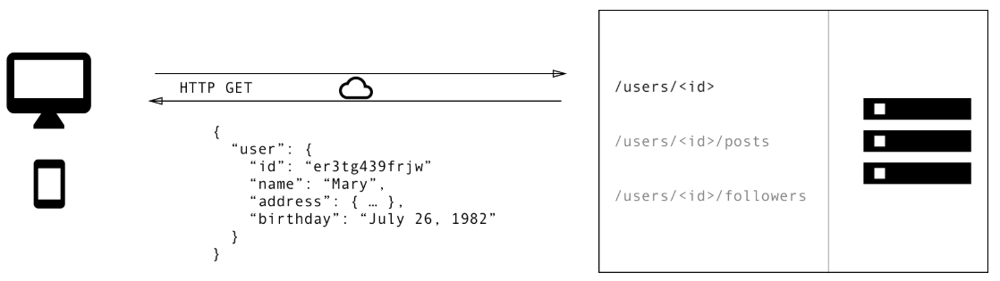

GraphQL
for
Absolute Beginners
by Jhankar Mahbub / @jsdude005
Who is
JS Dude?

- @jsdude005
- Organize Chicago JavaScript meetup
- Sr. Web Developer, Nielsen
- Enjoy Learning, talking about JavaScript
Jump from 14,000ft

Marathon 2016, 2017

10,000 volts
international Javascript conference, London
We will cover
- Why you should consider GraphQL
- How to run GraphQL Query
- Features in GraphQL
- Use GraphQL with popular framework
- Side by side comparison with REST
REST
Representational state transfer

REST
- Widely accepted Standard to design API
- Offers stateless server
- Structured access to resources
Load data by REST
API Gateways

Common Issues
- Very Rigid server contract
- More url and more complicated
- Slow, complex
- Over fetching of data
- Under Fetching
- Less versioning contract
- Or create new API
What is GraphQL
GraphQL
- A query language for APIs
- Fulfill queries at runtime with existing data
- Gives power to ask for exactly what needed
- Minimizes the data provided to the client
- Understandable description of the data in API
- Easier to evolve APIs over time
- Specification: https://facebook.github.io/graphql
GraphQL Approach

Why GraphQL
- More Efficient, Flexible and Powerful
- Rapid iteration, without changing API
- Strong Type System: Schema Definition Language (SDL)
Simple GraphQL
Basic Query
Predict shape of the result
{
hero {
name
}
}
{
"data": {
"hero": {
"name": "R2-D2"
}
}
}
Add fields
Add only the fields needed
{
hero {
name,
appearsIn
}
}
{
"data": {
"hero": {
"name": "R2-D2",
"id": "2001"
}
}
}
Response Structure
Playground
Arguments
arguments
- REST, can a single set of arguments
- query parameters and URL segments
Arguments anywhere
GraphQL, every field and nested object can get its own set of arguments
one query can replace multiple api
Aliases
Fragments
Don't Repeat use fragments
Operation name
Variable
Variable
- Replace the static value in the query with $variableName
- Declare $variableName as one of the variables accepted by the query
- Pass variableName: value in the separate, transport-specific (usually JSON) variables dictionary
variable
Default Variable
Type
GraphQL can be used with any backend framework or programming language
More about queries
Mutation
Validation
predetermined whether a GraphQL query is valid or not
Field Doesn't exists
Fragment cannot refer itself
Execution
Execution
Resolver
- Each field on each type is backed by a function called the resolver
- resolver which is provided by the GraphQL server developer.
- When a field is executed, the corresponding resolver is called to produce the next value.
Advanced Resolver
- Root fields & resolvers
- Asynchronous resolvers
- Trivial resolvers
- Scalar coercion
- List resolvers
Producing the Result
- As each field is resolved, the resulting value is placed into a key-value map
- field name (or alias) as the key
- the resolved value as the value
Meta Field
Other important point
- Authorization
- Caching
Serving over Http
- GraphQL should be placed after all authentication middleware
GET
POST
Response
Caching
- REST have end point and you can cache based on parameter
- GraphQL doesn't have uniquely identifiable end point
- Assign Globally unique ID
Thinking in GraphQL
Graph QL with Javascript
Rest VS GraphQL

When to consider GraphQL
Schema Definition
Schema
- Character is a GraphQL Object Type
- name and appearsIn are fields on the Character type.
- String is one of the built-in scalar types
- String! means that the field is non-nullable
- [Episode] represents an array of Episode objects
- [Episode]! represents non-nullable, expect an array (with zero or more items)
types
- Int, Float
- String, Boolean
- ID
- Enumeration types
- List and Non-null
- Interface
- Union Types
Schema Argument

- All arguments are named.
- Arguments can be either required or optional
- Can define a default value for optional argument
Query and Mutation types
- GraphQL service has a query type
- may or may not have a mutation type
That means that the GraphQL service needs to have a Query type with hero and droid fields:
Quiz Time
What is Never type?
Tools
Relay
Apollo
Use with other framework
Learn New thing
Learn react by building
- Build an e-commerce site

thatjsdude.com/workshops/react
Email: khan4019@gmail.comReferences
Resources
Thank you
-Website: thatjsude.com
-workshop: thatjsdude.com/workshops/react/
-Youtube: youtube.com/c/ThatJSDude
-Email: khan4019@gmail.com